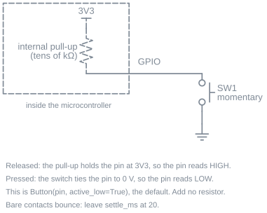
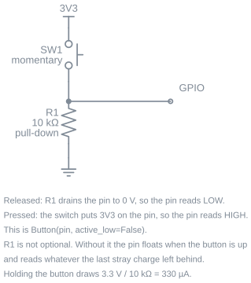
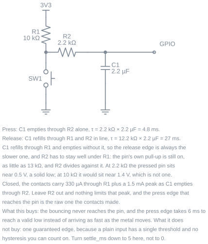

User Guide¶
Overview¶
A button is a pin that reads 0 or 1. Turning that into something a program can use takes more than one read: contacts bounce, a tap can be shorter than one pass of your loop, and "held for two seconds" is a different event from "pressed".
chumicro_buttons does that work. Button reads one momentary button or switch, Buttons reads several keys on one scan, and KeyMatrix reads a keypad wired as rows by columns. All three produce the same readings, so the code you write for one button works unchanged for twelve.
Getting started¶
Wire a momentary button between a GPIO pin and GND. The internal pull-up is switched on for you, so no extra parts are needed.
import board
from chumicro_buttons import Button
from chumicro_timing import ticks, ticks_ms
button = Button(pin=board.GP14, ticks=ticks)
while True:
now = ticks_ms()
button.check(now)
if button.just_pressed:
print("pressed")
check(now_ms) does one small step: it collects whatever the hardware captured and updates the readings. It never waits, so the rest of your program keeps running.
On MicroPython there is no board module; pass a machine.Pin instead, and everything else on the page reads the same:
Any GPIO that can read with a pull-up works. On a Pico W that is every GP pin; on a classic ESP32, skip GPIO 34 to 39, which are input-only with no pull-ups.
Reading the button¶
Every reading is a plain attribute, refreshed by check():
button.pressed # True while the key is down
button.just_pressed # True only on the tick the press landed
button.just_released # True only on the tick the release landed
button.held_ms # how long it has been down
held_ms keeps the duration of the press that just ended, so a release handler can ask how long the key was held. It resets on the next press.
The just_ family is true for exactly one pass of the loop. That means you can read it from several places in the same pass without it firing twice, and you never have to remember to clear anything.
pressed is the reading that matters for a switch that stays where you put it. A toggle switch, a reed switch on a door, a slide switch selecting a mode: same object, and the edges are how you notice it moved.
Presses land even when the loop is slow¶
A tap is short. If your program stalls on a socket read or a flash write, a plain pin read looks at the wrong moment and the press is gone.
This library captures the edge when it happens rather than when you get around to asking. On CircuitPython that is the firmware's own background scan; on MicroPython the library installs a small interrupt handler. You set none of it up, and there is no capture mode to choose.
The consequence you can see is that durations are measured from the real edge:
button.check(now)
if button.just_pressed:
print(button.held_ms) # already non-zero if your loop was busy
A press at 100 ms noticed by a loop that got back at 180 ms reports 80 ms held, not 0. That is the press the person actually performed.
When a signal is so noisy that capture cannot keep up, button.overflowed goes true for that tick. On an ordinary switch you will not see it. If you do, the wiring section below is the fix.
Debouncing¶
A switch is two pieces of metal meeting, and they bounce apart a few times on the way. A small tactile switch settles in about one to five milliseconds; a bigger toggle or microswitch can take twenty. Left alone, one press arrives as several.
settle_ms is the only setting, and it defaults to 10:
button = Button(pin=board.GP14, ticks=ticks, settle_ms=10) # the default
button = Button(pin=board.GP14, ticks=ticks, settle_ms=20) # a switch that bounces badly
button = Button(pin=board.GP14, ticks=ticks, settle_ms=0) # the signal is already clean
An edge is believed once the signal has held its new state for settle_ms, and it is stamped with the moment it changed rather than the moment that became certain. Durations therefore measure the press the person actually made, however late your loop gets back to it.
settle_ms also sets the shortest press the library will report, and on fast tapping that costs more than it sounds like. A tap held for less than the window never holds its new state long enough to be believed, so it is discarded along with the bounce, silently.
Measured on a Pi Pico W against a switch with no debounce hardware: 30 seconds of tapping as fast as a finger goes closed the contact 107 times. Thirty of those closures were shorter than 20 ms and seven were shorter than 10 ms, so a 20 ms window would have dropped better than a quarter of them and the 10 ms default drops about six in a hundred. That measurement is why the default is 10 rather than 20.
That is the whole tradeoff, so pick the window from what the button is for:
settle_ms |
Good for | Drops taps shorter than |
|---|---|---|
| 20 | A toggle, a microswitch, or any big switch that bounces badly | 20 ms, about a quarter of fast tapping |
| 10 (default) | A tactile switch, which is most buttons | 10 ms, about six taps in a hundred |
| 5 | Fast tapping or a game control, on a switch you have measured | 5 ms, which a finger rarely reaches |
| 0 | Debouncing hardware behind the pin, or a signal already clean | nothing |
The default is a compromise. A small tactile switch settles inside a millisecond, so 10 is generous for one; a big toggle or microswitch can bounce for twenty, and on one of those a 10 ms gap in the middle of the bouncing can be believed as an edge. Raise it to 20 for a big switch, and lower it for a button that is tapped rather than pressed. The next section covers debouncing hardware and which arrangements actually earn a zero.
Wiring¶
A plain button¶

Switch between the pin and GND, internal pull-up on. This is what Button(pin=...) sets up for you and it needs no other parts. The pin reads high until the button pulls it down, which is why active_low defaults to True.
Wiring to 3V3 instead needs a pull-down resistor of your own, and active_low=False:

10 kΩ draws 330 µA while the button is held, which matters on a battery if the button is held often.
Adding a capacitor¶
Software debouncing is enough for almost every project. A capacitor at the pin is worth adding when the wire run is long enough to pick up noise, or when the button feeds something you do not control.

The capacitor slows both edges so the bouncing never reaches the pin. The two edges are not slowed equally: the capacitor refills through the pull-up but empties through the series resistor alone, giving 4.8 ms on press against 27 ms on release.
The series resistor does two jobs. It limits the current the contacts carry when the capacitor dumps into them, and it has to stay well under the pull-up, because the pin's own pull-up is still switched on and divides against it. At 2.2 kΩ the pressed pin sits near 0.5 V, a solid low. At 10 kΩ it would sit near 1.4 V, which is not a low at all.
With this in place the bouncing is gone before the pin sees it, so turn settle_ms down to 5. Leave it above zero: a plain input has one threshold and no hysteresis you can rely on, so the last word on a clean single edge still belongs to the settle window. A bigger capacitor does not fix that and makes it worse, because it lengthens the time the signal spends near the threshold.
Long press, repeat, and clicks¶
Three duration-driven events sit on top of the edges. Each is off unless you ask for it, apart from long press which defaults to half a second.
button = Button(
pin=board.GP14,
ticks=ticks,
long_press_ms=500, # 0 turns long press off
repeat_ms=200, # 0 turns auto-repeat off
repeat_delay_ms=700, # how long to hold before repeat starts
click_ms=250, # 0 turns click counting off
)
Long press fires once per press, not once per tick:
Auto-repeat is what a held arrow key does. After repeat_delay_ms, just_repeated comes true every repeat_ms until the key is released. The cadence is anchored to the schedule rather than to your loop, so a slow pass does not stretch it, and a long stall produces one catch-up fire instead of a burst:
Click counting waits click_ms after a release to see whether another press follows. When the series closes, click_count holds how many presses were in it:
if button.just_clicked:
if button.click_count == 1:
send_status()
elif button.click_count == 2:
wake_screen()
A single press still reports just_pressed immediately. Click counting adds a later event; it does not delay the earlier one.
A press held for longer than click_ms is a hold rather than a click, so it does not add to the count. That is what keeps a long press from also arriving as a single click.
Callbacks¶
If you would rather be called than ask, set the callbacks and let handle(now_ms) dispatch them:
button.on_press = lambda: print("down")
button.on_long_press = factory_reset
button.on_click = lambda count: print("clicked", count, "times")
while True:
now = ticks_ms()
if button.check(now):
button.handle(now)
check() returns True when the tick produced anything, which is the gate handle() sits behind. Your callbacks run in your own loop, in normal context, so they can allocate, print, and raise like any other code.
Several buttons¶
Buttons reads a group of keys on one scan, which is cheaper than a scan per key and is what makes two keys pressed together land on the same tick:
from chumicro_buttons import Buttons
buttons = Buttons(pins=(board.GP14, board.GP15, board.GP16), ticks=ticks)
while True:
now = ticks_ms()
buttons.check(now)
if buttons[0].just_pressed:
print("first key")
if buttons[1].pressed and buttons[2].pressed:
print("chord")
Each buttons[index] is a Button with its own readings and its own callbacks. For one handler covering the whole group, the panel carries callbacks that take the key number:
A keypad matrix¶
A keypad wires its keys as rows by columns so twelve keys need seven pins instead of twelve. KeyMatrix reads that arrangement and gives you the same Button objects.
It is imported from its own module rather than from the package, which keeps it off boards that only have discrete buttons:
from chumicro_buttons.matrix import KeyMatrix
keypad = KeyMatrix(
row_pins=(board.GP2, board.GP3, board.GP4, board.GP5),
column_pins=(board.GP6, board.GP7, board.GP8),
ticks=ticks,
)
while True:
now = ticks_ms()
keypad.check(now)
if keypad[0].just_pressed:
print("top-left key")
Keys are numbered row-major, so row * len(column_pins) + column. With the three columns above, key 4 is row 1, column 1.
One capture note: CircuitPython scans the grid in the firmware's own background scan, so a tap between two passes of your loop still lands. MicroPython scans once per check(now_ms), because a grid has to be driven a row at a time, so on a loop that stalls for long stretches a very short tap on a matrix key can be missed. Discrete buttons do not have that limit on either runtime.
Wiring the matrix and picking the pins¶
Ready-made membrane keypads bring the grid out as one row of header pins, rows and columns mixed. Wire them to any GPIOs that can both read with a pull-up and drive as an output: on a Pico W that is every GP pin, and on a classic ESP32 skip GPIO 34 to 39, which can do neither. On MicroPython pass machine.Pin objects the same way as a discrete button.
A membrane keypad has no diodes inside, and on a grid like that rows and columns are electrically interchangeable. Which pins you call rows only decides which way the numbering runs, so a keypad that reports its keys in column order wants its two tuples swapped, not rewired. If the header is unlabelled, press each key in reading order and note which pair of pins shorts together; the pin the whole first row of presses shares is your first row, and the pins it paired with are your columns in order.
What a diode-less grid cannot do is three keys at once: three pressed keys forming a rectangle make the fourth corner read as pressed. That is the wiring, not the library, and it is why grids built for chords carry a diode per key. On a grid that does have diodes, columns_to_anodes tells the scan which way they face: leave it True when each diode's striped end points at a row pin. Guessing wrong is quiet rather than damaging, so a diode keypad that reports nothing at all is the symptom to flip it on.
Runner pattern¶
check(now_ms) and handle(now_ms) are the contract chumicro-runner expects, so a button joins the rest of your services with one line:
from chumicro_runner import Runner
runner = Runner()
runner.add(wifi)
runner.add(button) # checked every tick, handled when it has news
while True:
now = runner.tick()
runner.wait(now)
The runner captures one timestamp per pass and shares it with everything, so the button's idea of "now" matches the rest of the program. A button also publishes its next timer through next_deadline(now_ms), so runner.wait(now) sleeps exactly until a long press, an auto-repeat, or a click window is due rather than past it. A press itself is an edge, not a timer: one that lands mid-sleep is captured with its real timestamp and reported at the next wake.
Callbacks ride this loop with nothing extra. runner.tick() calls check and then handle, so a program that sets the callbacks never reads the just_ family:
A service that stalls inside its own handle, a TLS handshake step for example, stalls every service the same way. The press is captured underneath the stall and its callback dispatches on the tick that follows, with held_ms measured from the edge rather than from the tick that got around to noticing.
Memory notes¶
check() allocates nothing in steady state. Edges are drained through a preallocated buffer, the readings are plain attributes written in place, and the loops are indexed by hand rather than iterated. A program can tick a button forever without the heap growing.
The one tunable is the capture buffer on MicroPython, sized at construction to hold the burst of edges a bouncing contact produces. If overflowed ever comes true on an ordinary press, the switch is bouncing harder than the buffer expects, and the wiring section is a better answer than a bigger buffer.
Testing¶
chumicro_buttons.testing.FakeButtonSource stands in for the hardware, so press logic is an ordinary unit test with no board and no waiting:
from chumicro_buttons import Button
from chumicro_buttons.testing import FakeButtonSource
from chumicro_timing.testing import FakeTicks
def test_hold_arms_the_reset():
source = FakeButtonSource()
button = Button(source=source, ticks=FakeTicks(), long_press_ms=3000)
source.press(at_ms=100)
button.check(100)
button.check(3200)
assert button.just_long_pressed
Each queued edge takes its own at_ms, separate from the tick you pass to check(), which is how you cover slow-loop behavior on the host. The testing page goes further, including chords and the overflow path.
Platform notes¶
| Runtime | How presses are captured |
|---|---|
| CircuitPython | The firmware's keypad scan, which runs in the background and stamps each edge with the time it happened |
| MicroPython | A capture interrupt the library installs and owns; your code never runs in interrupt context |
| CPython | No GPIO exists, so pin= raises and points you at FakeButtonSource |
The API is identical on all three. On CircuitPython the modules this builds on are compiled into the firmware, so they cost nothing in your board's storage.
Examples¶
| Example | What it shows |
|---|---|
circuitpython_button_toggle.py |
A button flips the onboard LED on CircuitPython (hardware) |
micropython_button_toggle.py |
The same button on MicroPython (hardware) |